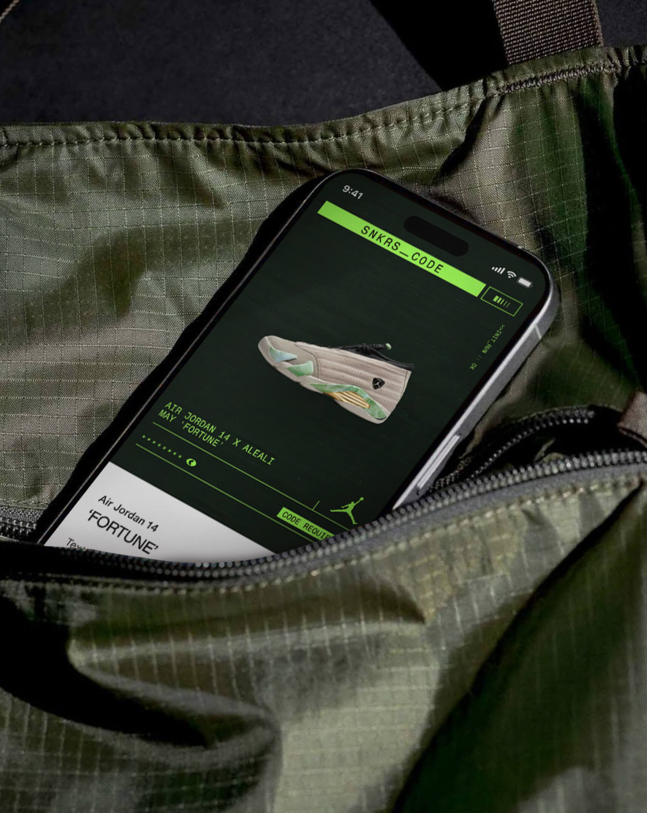
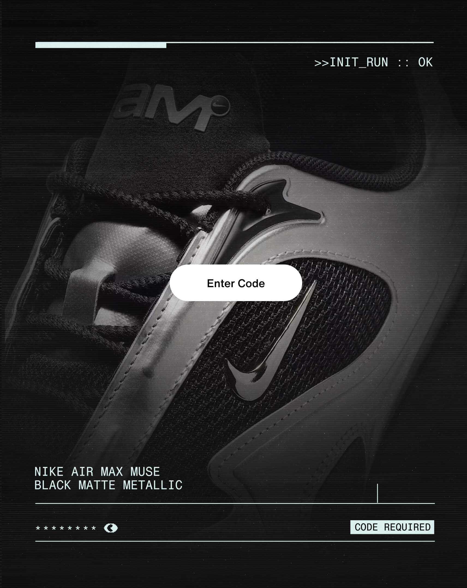
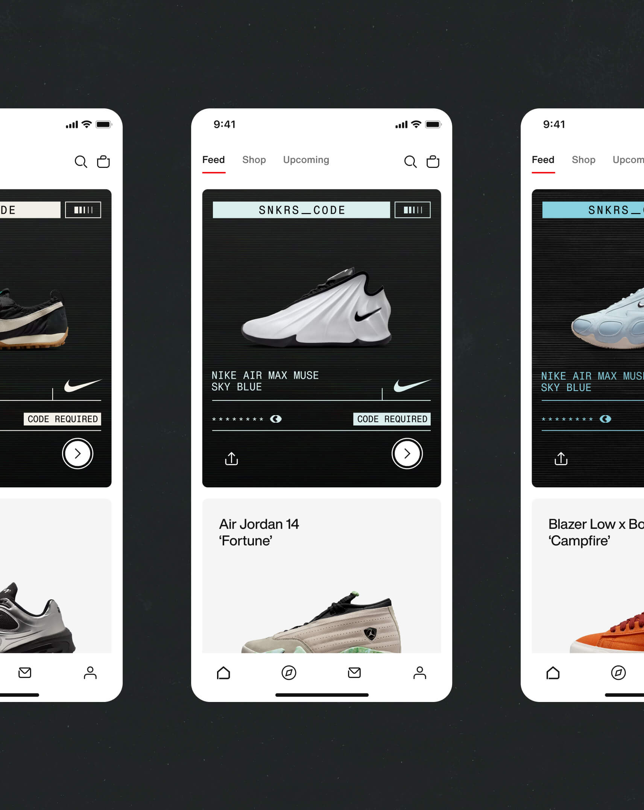
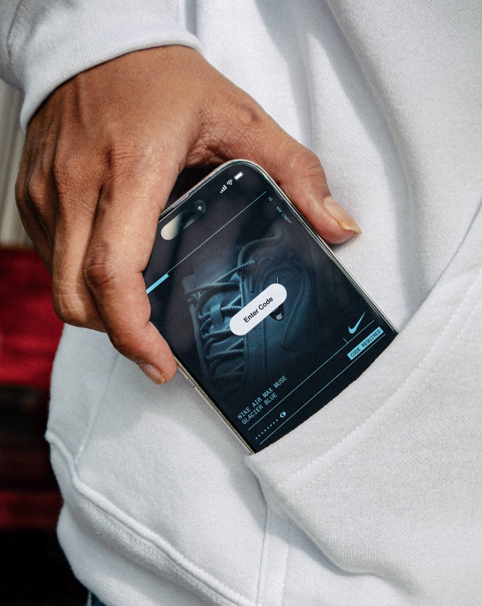

Brand development for the new line of SNKRS.
Jae Yoon Studio was commissioned to develop the identity for SNKRS Code, Nike's new line of exclusive releases. The brand system centers on a hacker concept that flexes its color to each shoe in the collection.
Visual identity, brand design, art direction, motion



